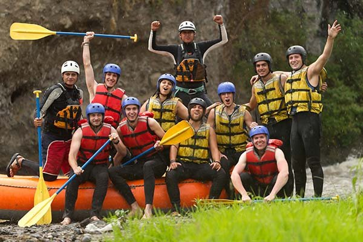
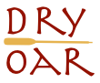
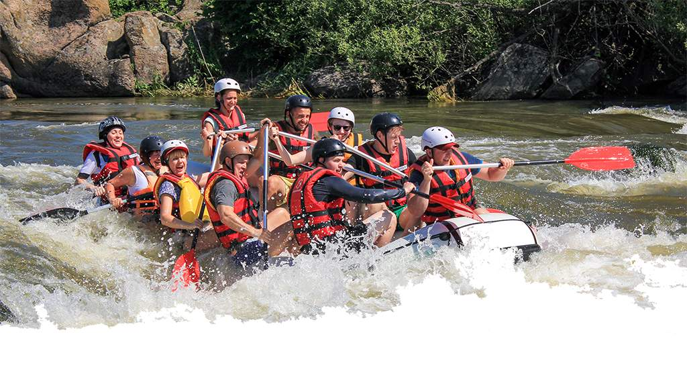

At Dry Oar, our mission is to share the thrill of the river with everyone. We believe every trip should be safe, exciting, and full of laughter. Our motto is simple: paddle hard, stay dry, and make memories that last a lifetime.



At Dry Oar, our mission is to share the thrill of the river with everyone. We believe every trip should be safe, exciting, and full of laughter. Our motto is simple: paddle hard, stay dry, and make memories that last a lifetime.
Dry Oar began in 2005 when two friends who loved the river bought their first raft. They started by guiding small groups of family and friends on weekend trips. Word spread quickly, and soon they were leading guests from all over the world. Today, Dry Oar has a team of trained guides and a fleet of rafts, but we still run every trip with the same care and passion as the very first one.